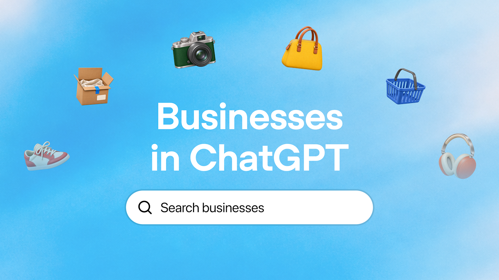
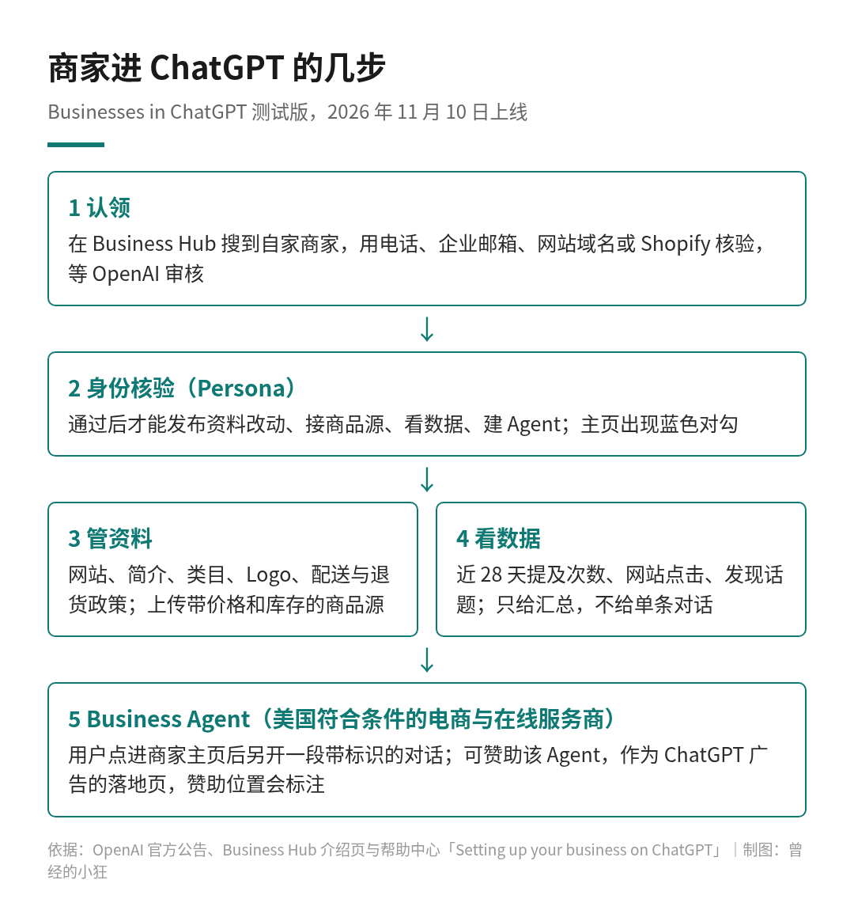
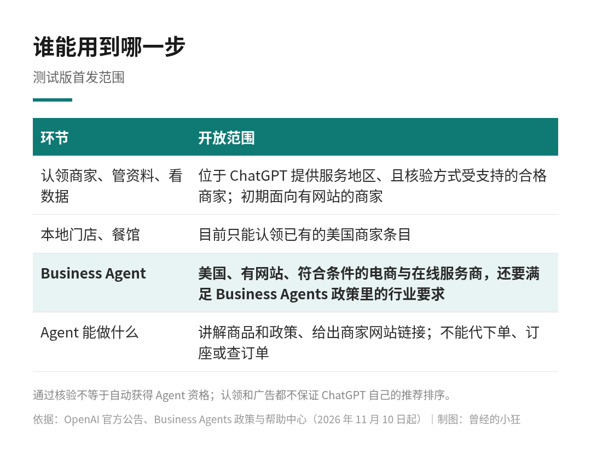

以前，一个商家想在 ChatGPT 里被看见，基本只能碰运气：等模型自己搜到你的网站，再看它愿不愿意提你一句。
11 月 10 日，OpenAI 给商家开了一扇正门：Businesses in ChatGPT 测试版。商家可以认领自己的资料，上传商品信息，看 ChatGPT 里有多少人提到你、点进了你的网站；在美国，符合条件的电商和在线服务商还能派一个自己的 Business Agent 进来，替你回答顾客的问题。
用我的话说，ChatGPT 开始给商家发工牌了。OpenAI 在公告里给的背景数字是：每周有 12 亿人在用 ChatGPT。
Businesses in ChatGPT 发布图。图片来源：OpenAI 官方公告
入口叫 Business Hub，在 ChatGPT 侧边栏里。商家搜到自己的条目，选一种核验方式证明你和这家店的关系：企业电话、企业邮箱、在网站域名里加一条 TXT 记录，或者直接连 Shopify。提交后等 OpenAI 审核。
审核通过还不算完。要发布资料改动、接入商品源、查看数据或者创建 Agent，还得再过一道 Persona 身份核验，可能需要政府签发的证件、企业注册信息和授权证明。这一步批下来，你的商家主页上才会出现蓝色对勾。
认领之后能管的东西包括：网站、商家简介、商品或服务类目、Logo、配送政策、退货政策，还能加封面图。卖货的商家可以接入商品源，用 CSV 文件或 Shopify 的商品源，把商品详情、价格和库存同步进来。Shopify 商家更省事，可以在 Business Hub 或 Shopify 后台直接连店。
有两点要有心理准备。一是改动要经过 OpenAI 审核才会发布，出现在回答里也需要时间，ChatGPT 还可能参考别的来源。二是官方写得很直白：认领不保证更靠前的排位，也不保证销量。ChatGPT 依然会做自己独立的推荐和比较。
以前商家根本不知道自己在 ChatGPT 里是什么形象。现在 Business Hub 会给一份汇总数据，统计最近 28 天的情况，主要有三项：提及次数、网站点击次数，以及「发现话题」，也就是那些提到或引用你的回答，大致围绕哪些主题。
提及怎么算，帮助中心说得很细：对线上商家来说，ChatGPT 引用了你的网站才算一次提及，单单说出品牌名不算；对本地商家来说，ChatGPT 展示了这家门店的结果就算，哪怕顾客没点进去。
隐私上，OpenAI 的口径是：不会把用户的对话，或用户和 Business Agent 的聊天内容，分享给商家。数据只给汇总，而且要达到一定的对话量门槛才显示。某一项是空白，不一定代表没有人提，可能只是还没到门槛。
这是这次最有意思的部分。
用户在 ChatGPT 里问东西，回答里出现了某个商家，就可以点进这家的 ChatGPT 主页。如果这家有 Business Agent，用户可以选择跟它开一段对话，比如问两款商品有什么区别、哪个功能更适合自己。
这段对话有三个「分开」：有明确的标识，和用户原来的 ChatGPT 对话分开，也和 ChatGPT 自己的独立回答分开。你可以把它理解成：ChatGPT 是导购台，Business Agent 是商家派驻的店员，胸前挂着工牌，顾客知道自己在跟谁说话。

Businesses in ChatGPT 官方宣传图。图片来源：OpenAI Business Hub 介绍页
这个店员能做什么，也有清楚的边界。按帮助中心的说法，目前它可以讲解商品和政策，给出商家网站的链接，但不能替用户下单、订座，也不能查订单，这些都要回到商家网站完成。商家在 ChatGPT 里如果另有插件，Business Agent 这段对话也不会调用插件的数据和能力。
Business Agents 政策还给店员立了几条规矩：
要说清楚自己是代表商家的 AI，不能装成独立顾问、真人，或者暗示有 OpenAI 背书。
不能编造商品、价格、库存、资质、评价或保证，重要的费用和限制条件不能藏着。
不能施压、制造虚假紧迫感，用户拒绝之后不能一直追着推销。
不能索要不必要的高风险个人信息，比如健康信息、证件号、金融或登录凭据；没有用户通过官方功能明确授权，不能把用户信息交给商家，也不能替用户提交表单、预订或购买。
不能提供依法需要专业执照才能给的建议，也不能在没有人工复核的情况下自动做出高风险决定。
商家还可以赞助自己的 Business Agent，把它当作 ChatGPT 广告的落地页，触达更多潜在顾客。赞助位置会明确标注，并和 ChatGPT 的回答分开。
帮助中心专门强调了一句：广告不会影响 ChatGPT 的独立回答。认领、发布 Agent、投广告是三件独立的事，不投广告也可以认领和看数据。

商家进 ChatGPT 的几步。依据 OpenAI 官方公告、介绍页与帮助中心，制图：曾经的小狂
把这几样放在一起看，路径就清楚了：用户在聊天里发现你，点进你的主页，和你的 Agent 聊清楚，最后去你的网站下单。聊天框正在变成发现商品的入口，成交这一步暂时还在商家自己的网站。
测试版的范围要分两层看。
认领商家、管理资料、看数据，面向的是位于 ChatGPT 提供服务地区、且核验方式受支持的合格商家，初期只开放给有网站的商家。本地门店和餐馆，目前只能认领已经存在的美国商家条目。
Business Agent 更窄：只面向美国、有网站、符合条件的电商和在线服务商，还要满足 Business Agents 政策里的行业要求。OpenAI 会同时看商家类目和 Agent 的用途，通过了商家核验，也不等于自动拿到 Agent 资格；有些类目可能会被暂缓，等 OpenAI 有把握安全支持了再开。

测试版首发范围。依据 OpenAI 官方公告、Business Agents 政策与帮助中心，制图：曾经的小狂
OpenAI 说，之后会把 Businesses in ChatGPT 和 Business Agents 扩展到更多市场和类目，也会做面向需求更复杂的大机构的工具。但时间表没有给。
先说直接的：按 OpenAI 帮助中心的支持地区名单，中国大陆和香港都不在 ChatGPT 的支持范围里。认领资格的前提又是「位于 ChatGPT 提供服务的地区」，所以在大陆注册经营、只做国内生意的商家，眼下和这扇门基本没有关系。Business Agent 现在更是只开放美国。
离这扇门最近的，是做海外市场的出海品牌：已经有面向海外的独立站，用 Shopify 之类的平台卖货，在支持地区有主体。至于具体能不能认领、能不能拿到 Agent 资格，要看商家所在地、类目和 OpenAI 的核验结果，官方没有给出逐条清单。
哪怕暂时进不去，有几件事现在就值得做：
把网站上的商品信息、价格、配送和退货政策写清楚、保持更新。ChatGPT 引用你的网站才算一次提及，网站本身就是你在 AI 里的门面。
如果用 Shopify，留意商品源的质量。OpenAI 说，Shopify 商家符合条件的商品已经通过 Shopify Catalog 接进了 ChatGPT。
想清楚哪些信息你愿意交给一个 AI 店员去讲。真到能建 Agent 的那天，政策要求你给的信息真实、及时，商家要对自己提供的信息和指令负责。
搜索时代，商家要做的是让搜索引擎找到你；AI 时代，问题变成了怎么让 AI 正确地理解你、介绍你。OpenAI 这次给出的答案很像一个熟悉的东西：认领主页、蓝色对勾、数据后台、广告位，再加一个会聊天的店员。
不同的是，这个店员住在别人的聊天框里，而且被规定了不能催单、不能乱许诺、不能偷看顾客的聊天记录。它会不会真的改变人们找商品、买东西的方式，要看接下来几个月美国商家用下来的效果。对我们来说，先把自家网站收拾干净，总不会错。
来源清单：
OpenAI 官方公告：Introducing Businesses in ChatGPT：https://openai.com/index/introducing-businesses-chatgpt
Businesses in ChatGPT 介绍页：https://openai.com/business/businesses-in-chatgpt/
Business Agents 政策：https://openai.com/policies/business-agents-policy/
OpenAI 帮助中心：Setting up your business on ChatGPT：https://help.openai.com/en/articles/20001635-setting-up-your-business-on-chatgpt
OpenAI 帮助中心：ChatGPT 支持的国家和地区：https://help.openai.com/en/articles/7947663-chatgpt-supported-countries